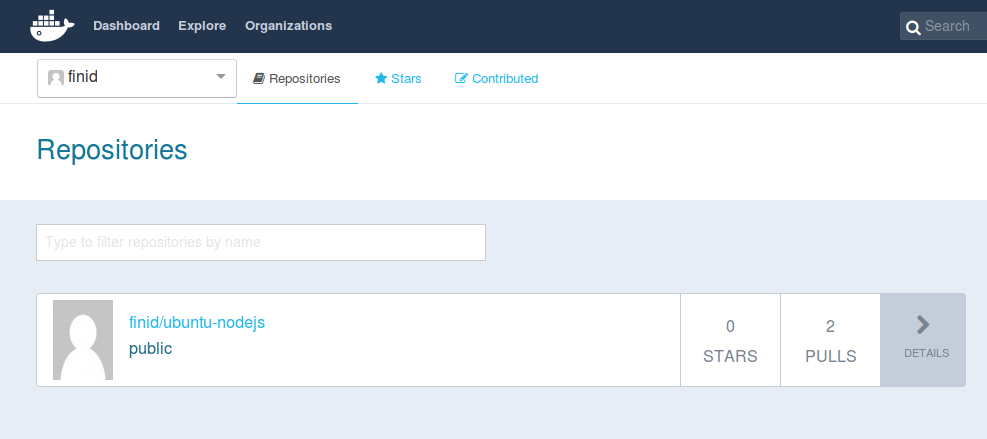

Как установить и использовать Docker в Ubuntu 16.04 PostedFebruary 15, 2017 201.2k views UbuntuDockerUbuntu 16.04
Docker - это приложение, позволяющее легко и быстро запускать другие приложения и процессы в контейнерах, которые подобны виртуальным машинам, но являются при этом более портируемыми, потребляют меньше ресурсов, а также меньше зависят от операционной системы машины-хоста. Для более детального знакомства с различными компонентами контейнеров Docker, рекомендуем ознакомиться со статьёй Экосистема Docker: Введение в часто используемые компоненты.
Существует два метода установки Docker на Ubuntu 16.04. Первый включает установку на существующую операционную систему. Второй предполагает использование утилиты Docker Machine, которая самостоятельно устанавливает на Docker на сервер.
В этой статье вы узнаете, как установить Docker в Ubuntu 16.04.
Для того, чтобы следовать инструкциям, описанным в этой статье, вам потребуются:
Внимание: Для установки Docker необходима 64-битная версия Ubuntu, а также версия ядра не ниже 3.10. 64-битный дроплет по умолчанию с Ubuntu 16.04 отвечает этим требованиям.
Все команды, упомянутые в этой статье, должны выполняться от имени не-рутового пользователя. Если для выполнения команды необходимы привилегии root, эта команда будет выполняться с sudo. Статья Начальная настройка сервера с Ubuntu 16.04 описывает процесс добавления пользователей и наделения их привилегиями sudo.
Пакет установки Docker, доступный в официальном репозитории Ubuntu 16.04, может быть не самой последней версии. Для получения последней версии необходимо устанавливать Docker из официального репозитория Docker. Далее мы опишем процесс такой установки.
Для начала обновим базу данных пакетов:
Теперь установим Docker. Добавьте ключ GPG официального репозитория Docker в вашу систему:
Добавим репозиторий Docker в список источников пакетов утилиты APT:
Обновим базу данных пакетов информацией о пакетах Docker из вновь добавленного репозитория:
Убедимся, что мы собираемся установить Docker из репозитория Docker, а не из репозитория по умолчанию Ubuntu 16.04:
В результате вы должны увидеть вывод, похожий на этот:
Вывод команды apt-cache policy docker-engine
docker-engine:
Installed: (none)
Candidate: 1.11.1-0~xenial
Version table:
1.11.1-0~xenial 500
500 https://apt.dockerproject.org/repo ubuntu-xenial/main amd64 Packages
1.11.0-0~xenial 500
500 https://apt.dockerproject.org/repo ubuntu-xenial/main amd64 Packages
Обратите внимание, что docker-engine не установлен, для установки будет использован репозиторий Docker для Ubuntu 16.04. Версия docker-engine может отличаться от указанной в нашем примере.
Далее, наконец-то, установим Docker:
После завершения выполнения этой команды Docker должен быть установлен, демон запущен, и процесс должен запускаться при загрузке системы. Проверим, что процесс запущен:
Вывод должен быть похож на представленный ниже, сервис должен быть запущен и активен:
Вывод● docker.service - Docker Application Container Engine
Loaded: loaded (/lib/systemd/system/docker.service; enabled; vendor preset: enabled)
Active: active (running) since Sun 2016-05-01 06:53:52 CDT; 1 weeks 3 days ago
Docs: https://docs.docker.com
Main PID: 749 (docker)
При установке Docker мы получаем не только сервис (демон) Docker, но и утилиту командной строки docker или клиент Docker. Мы рассмотрим использование утилиты docker далее в этой статье.
Шаг 2 — Использование команды Docker без прав sudo (опционально)
По умолчанию, запуск команды docker требует привилегий root, что означает, что вы должны использовать sudo. Также эта команда может запускаться пользователем, включённым в группу docker, которая автоматически создаётся при установке Docker. При попытке использования команды docker пользователем без привилегий sudo или пользователем, не входящим в группу docker, вы получите такой результат:
Выводdocker: Cannot connect to the Docker daemon. Is the docker daemon running on this host?.
See 'docker run --help'.
Для того, чтобы не вводить sudo каждый раз при запуске docker, добавьте имя своего пользователя в группу docker:
Для применения этих изменений вам необходимо разлогиниться и залогиниться в ваш дроплет.
Если вы хотите добавить произвольного пользователя в группу docker, вы можете указать имя пользователя в явном виде:
Далее в этой статье мы будем считать, что вы используете команду docker пользователем, находящимся в группе docker. Если вы не хотите добавлять своего пользователя в группу docker, пишите sudo для выполнения команд docker.
Шаг 3 — Использование команды Docker
Теперь, когда Docker установлен, ознакомимся с возможностями его утилиты командной строки. Утилита позволяет использовать различные опции, команды и аргументы. Общий вид синтаксиса выглядит следующим образом:
Для просмотра всех доступных подкоманд введите:
Для Docker 1.11.1 полный список подкоманд включает:
Выводattach Attach to a running container
build Build an image from a Dockerfile
commit Create a new image from a container's changes
cp Copy files/folders between a container and the local filesystem
create Create a new container
diff Inspect changes on a container's filesystem
events Get real time events from the server
exec Run a command in a running container
export Export a container's filesystem as a tar archive
history Show the history of an image
images List images
import Import the contents from a tarball to create a filesystem image
info Display system-wide information
inspect Return low-level information on a container or image
kill Kill a running container
load Load an image from a tar archive or STDIN
login Log in to a Docker registry
logout Log out from a Docker registry
logs Fetch the logs of a container
network Manage Docker networks
pause Pause all processes within a container
port List port mappings or a specific mapping for the CONTAINER
ps List containers
pull Pull an image or a repository from a registry
push Push an image or a repository to a registry
rename Rename a container
restart Restart a container
rm Remove one or more containers
rmi Remove one or more images
run Run a command in a new container
save Save one or more images to a tar archive
search Search the Docker Hub for images
start Start one or more stopped containers
stats Display a live stream of container(s) resource usage statistics
stop Stop a running container
tag Tag an image into a repository
top Display the running processes of a container
unpause Unpause all processes within a container
update Update configuration of one or more containers
version Show the Docker version information
volume Manage Docker volumes
wait Block until a container stops, then print its exit code
Для просмотра подробностей использования каждой из подкоманд используйте следующий формат:
Для просмотра общей справки Docker используйте следующую команду:
Шаг 4 — Работа с образами Docker
Контейнеры Docker запускаются из образов Docker. По умолчанию Docker получает образы из Docker Hub, представляющего собой реестр образов, поддерживаемый компаний Docker (эта компания стоит за всем проектом Docker). Кто угодно может создать и загрузить свои образы Docker в Docker Hub, поэтому для большинства приложений и дистрибутивов Linux, которые могут потребоваться вам для работы, уже есть соответствующие образы в Docker Hub.
Для того, чтобы проверить, можете ли вы осуществлять доступ и загружать образы из Docker Hub, введите следующую команду:
Корректный результат работы этой команды представлен ниже, он означает, что Docker работает правильно:
ВыводHello from Docker.
This message shows that your installation appears to be working correctly.
...
Вы можете искать образы, доступные в Docker Hub, используя команду docker с подкомандой search. Например, для поиска образа Ubuntu, введите:
Скрипт вернёт список всех образов на Docker Hub, которые подходят под эту поисковую строку. В нашем примере результат будет выглядеть похожим на этот:
ВыводNAME DESCRIPTION STARS OFFICIAL AUTOMATED
ubuntu Ubuntu is a Debian-based Linux operating s... 3808 [OK]
ubuntu-upstart Upstart is an event-based replacement for ... 61 [OK]
torusware/speedus-ubuntu Always updated official Ubuntu docker imag... 25 [OK]
rastasheep/ubuntu-sshd Dockerized SSH service, built on top of of... 24 [OK]
ubuntu-debootstrap debootstrap --variant=minbase --components... 23 [OK]
nickistre/ubuntu-lamp LAMP server on Ubuntu 6 [OK]
nickistre/ubuntu-lamp-wordpress LAMP on Ubuntu with wp-cli installed 5 [OK]
nuagebec/ubuntu Simple always updated Ubuntu docker images... 4 [OK]
nimmis/ubuntu This is a docker images different LTS vers... 4 [OK]
maxexcloo/ubuntu Docker base image built on Ubuntu with Sup... 2 [OK]
admiringworm/ubuntu Base ubuntu images based on the official u... 1 [OK]
...
В столбце OFFICIAL строка OK указывает на то, что образ построен и поддерживается компанией, которая занимается разработкой этого проекта. После того, как вы решили, какой образ использовать, вы можете загрузить его на вашу машину используя подкоманду pull:
После загрузки образа вы можете запустить контейнер с загруженным образом подкомандой run. Если на момент выполнения подкоманды run образ ещё не был загружен, клиент Docker сперва загрузит образ, а затем запустит контейнер с этим образом:
Для просмотра образов, загруженных на вашу машину, введите:
Вывод должен выглядеть похожим образом:
ВыводREPOSITORY TAG IMAGE ID CREATED SIZE
ubuntu latest c5f1cf30c96b 7 days ago 120.8 MB
hello-world latest 94df4f0ce8a4 2 weeks ago 967 B
Как мы покажем далее в этой статье, образы, которые вы используете для запуска контейнеров, могут быть модифицированы и использованы для создания новых образов, которые, в свою очередь, могут быть загружены в Docker Hub или любой другой репозиторий образов.
Шаг 5 — Запуск контейнера Docker
Контейнер hello-world, который мы запускали ранее, является примером контейнера, который запускается и завершает работу после вывода тестового сообщения. Контейнеры могут выполнять и более полезные действия, а также они могут быть интерактивными. В конце концов, они очень похожи на виртуальные машины, только менее требовательные к ресурсам.
В качестве примера запустим контейнер, использующий последнюю версию образа Ubuntu. Комбинация ключей -i и -t позволяет осуществлять интерактивный доступ к контейнеру:
Ваш консольный ввод должен измениться для отражения факта, что вы работаете внутри контейнера. Он примет следующий вид:
Выводroot@d9b100f2f636:/#
Внимание: Обратите внимание, что идентификатор контейнера отображается в консольном вводе. В примере выше это d9b100f2f636.
Теперь вы можете выполнять любые команды внутри контейнера. Для примера, давайте обновим базу пакетов внутри контейнера. Нет необходимости использовать sudo, поскольку внутри контейнера вы работаете с привилегиями root:
Теперь установим любое приложение в контейнер. Например, NodeJS.
Шаг 6 — Сохранение изменений в контейнере в образ Docker
Когда вы запускаете контейнер из образа Docker, вы можете создавать, изменять и удалять файлы, как и на виртуальной машине. Внесённые вами изменения будут иметь силу только в запущенном контейнере. Вы можете запускать и останавливать контейнер, но, как только вы уничтожите его командой docker rm, все изменения будут безвозвратно потеряны.
В этом разделе мы покажем, как сохранять изменения состояния контейнера в виде нового образа Docker.
После установки NodeJS в ваш контейнер Ubuntu, ваш запущенный контейнер отличается от образа, который был использован для его создания.
Для сохранения состояния контейнера в виде нового образа, выйдите из него:
Далее сделайте коммит изменений в новый образ Docker с использованием следующей команды. Ключ -m позволяет задать сообщение коммита для того, чтобы облегчить вам и другим пользователям образа понимание того, какие изменения были внесены. Ключ -a позволяет указать автора коммита. Идентификатор контейнера - этот тот самый идентификатор, который мы видели чуть ранее, когда начинали интерактивную сессию в контейнере. Если вы не создавали дополнительных репозиториев в Docker Hub, имя репозитория обычно является вашим именем пользователя в Docker Hub:
Например:
Внимание: Когда вы делаете коммит образа, новый образ сохраняется локально, то есть на вашей машине. Далее в этой статье мы опишем, как отправить (push) образ в репозиторий Docker (например, в Docker Hub) для того, чтобы он был доступен не только вам, но и другим пользователям.
После завершения операции вывод списка образов Docker на вашей машине должен отображать и только что созданный образ, а также исходный образ, из которого мы построили новый образ:
Вывод должен быть похож на этот:
Выводfinid/ubuntu-nodejs latest 62359544c9ba 50 seconds ago 206.6 MB
ubuntu latest c5f1cf30c96b 7 days ago 120.8 MB
hello-world latest 94df4f0ce8a4 2 weeks ago 967 B
В примере выше ubuntu-nodejs - это новый образ, созданный на основе образа ubuntu из Docker Hub. Разница в размере отражает внесённые изменения. В этом примере разница в размере вызвана установленным NodeJS. В следующий раз, когда вам потребуется запустить контейнер с Ubuntu с предустановленным NodeJS, вы можете использовать этот новый образ. Образы могут строиться и с помощью так называемого файла Docker (Dockerfile). Но это более сложный процесс и мы не будем описывать его в этой статье.
Шаг 7 — Отображение контейнеров Docker
Через некоторое время после начала использования вами Docker, на вашей машине будет множество активных (запущенных) и неактивных контейнеров. Для просмотра списка активных контейнеров используйте команду:
Вы увидите вывод следующего характера:
ВыводCONTAINER ID IMAGE COMMAND CREATED STATUS PORTS NAMES
f7c79cc556dd ubuntu "/bin/bash" 3 hours ago Up 3 hours silly_spence
Для просмотра всех контейнеров - и активных, и неактивных, добавьте к этой команде ключ -a:
Для отображения последнего созданного контейнера используйте ключ -l:
Для остановки запущенного контейнера введите:
Идентификатор-контейнера можно найти с помощью команды docker ps.
Шаг 8 — Отправка контейнеров Docker в репозиторий Docker
После создания образа Docker из другого образа следующим логичным шагом будет поделиться этим образом со своими друзьями, с пользователями Docker Hub или любого другого репозитория образов. Для отправки образов в Docker Hub или любой другой репозиторий Docker, у вас должен быть создан аккаунт пользователя в этом репозитории.
В этом разделе мы покажем, как отправлять (push) образ в Docker Hub. Для того, чтобы узнать, как создать свой собственный частный репозиторий Docker, рекомендуем ознакомиться со статьёй Как настроить частный репозиторий Docker в Ubuntu 14.04.
Для начала зарегистрируйтесь в Docker Hub. Далее для отправки своего образа, войдите в Docker Hub, используя свою учётную запись:
Если вы указали верный пароль, аутентификация должна завершиться успешно. Теперь вы можете отправить свой образ с помощью следующей команды:
Отправка займёт некоторое время, после её завершения вы увидите вывод, похожий на этот:
ВыводThe push refers to a repository [docker.io/finid/ubuntu-nodejs]
e3fbbfb44187: Pushed
5f70bf18a086: Pushed
a3b5c80a4eba: Pushed
7f18b442972b: Pushed
3ce512daaf78: Pushed
7aae4540b42d: Pushed
...
После отправки образа в репозиторий, вы сможете увидеть образ в панели управления, как на картинке ниже.

Если при попытке отправки образа вы увидели ошибку, похожую на представленную ниже, вы не залогинились в Docker Hub:
ВыводThe push refers to a repository [docker.io/finid/ubuntu-nodejs]
e3fbbfb44187: Preparing
5f70bf18a086: Preparing
a3b5c80a4eba: Preparing
7f18b442972b: Preparing
3ce512daaf78: Preparing
7aae4540b42d: Waiting
unauthorized: authentication required
В этом случай осуществите вход в репозиторий и повторите отправку образа.
В этой статье мы коснулись лишь основ работы с Docker, однако, полученных знаний должно хватить для начала работы с Docker в Ubuntu 16.04. Как и большинство проектов с открытым исходным кодом, Docker основан на быстро изменяющейся кодовой базе, поэтому будет полезно завести привычку регулярно посещать блог проекта для ознакомления с последней информацией о проекте.
Рекомендуем также ознакомиться и другими статьями об использовании Docker сообщества DO.